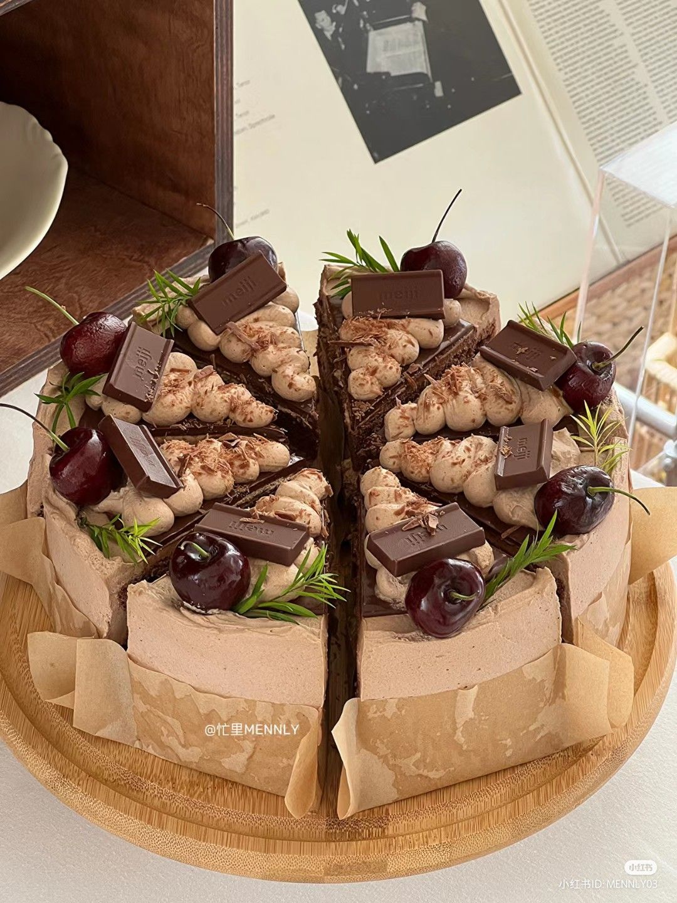
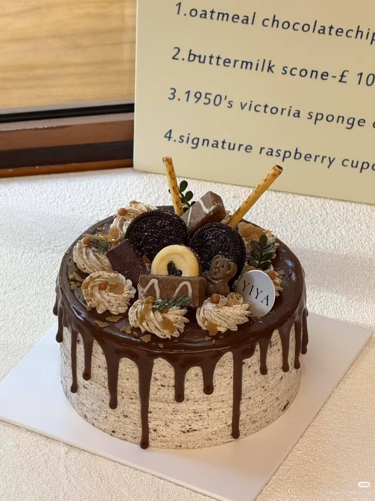
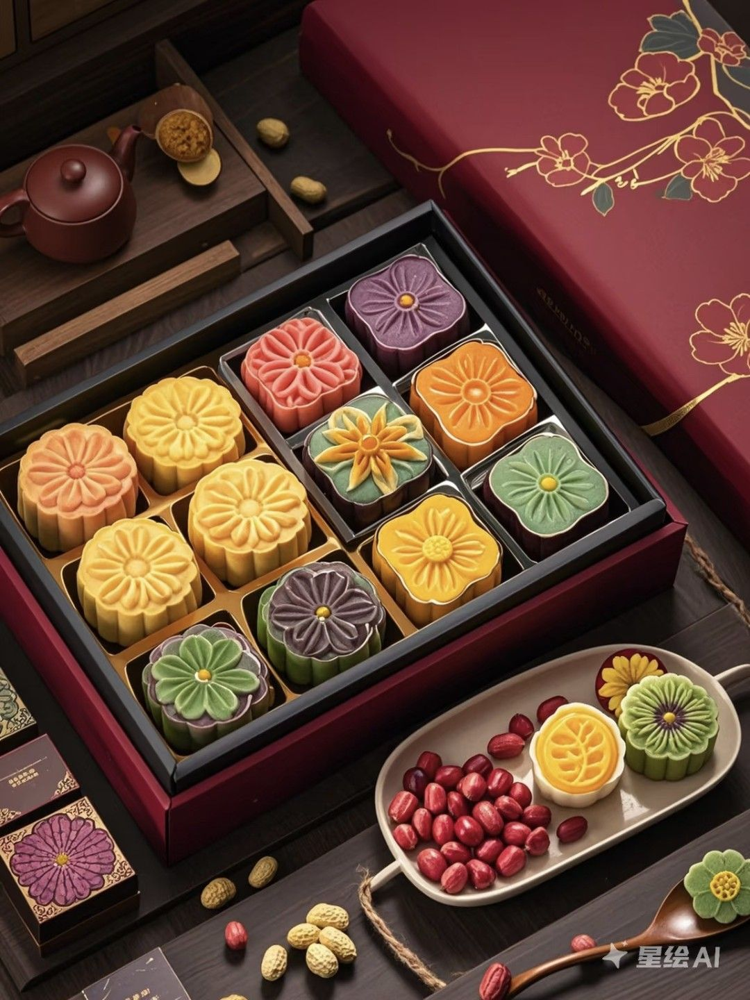
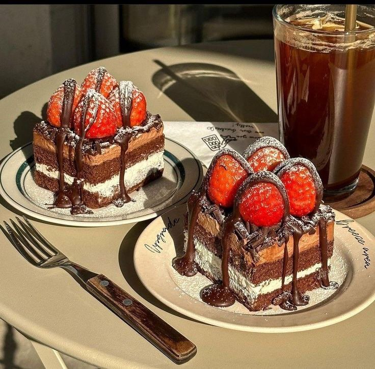
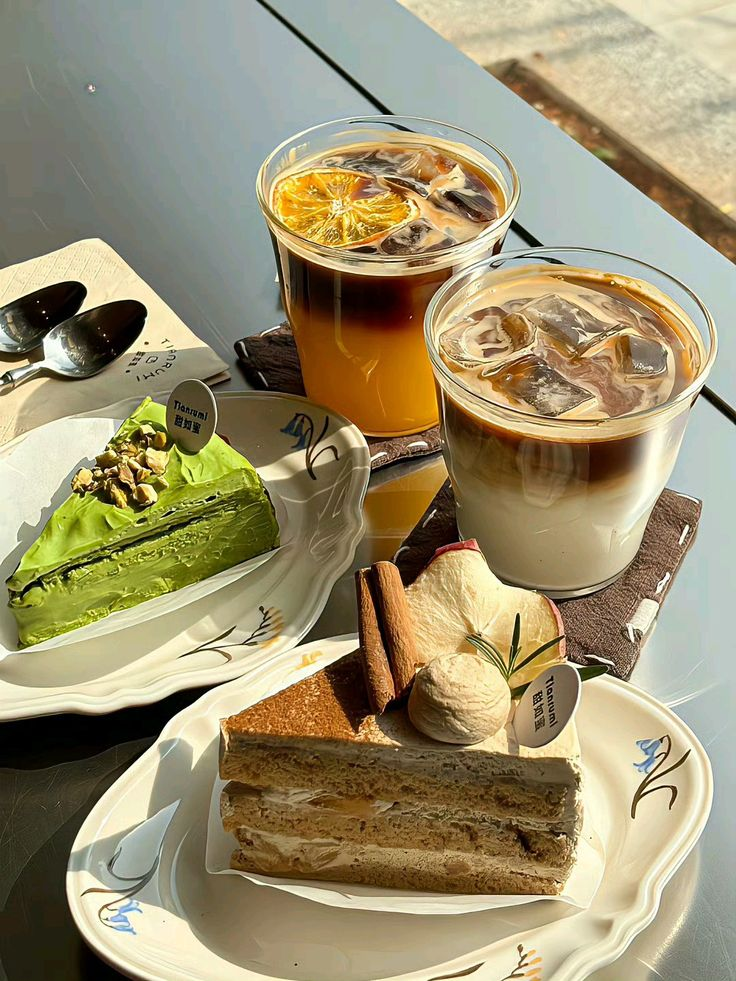
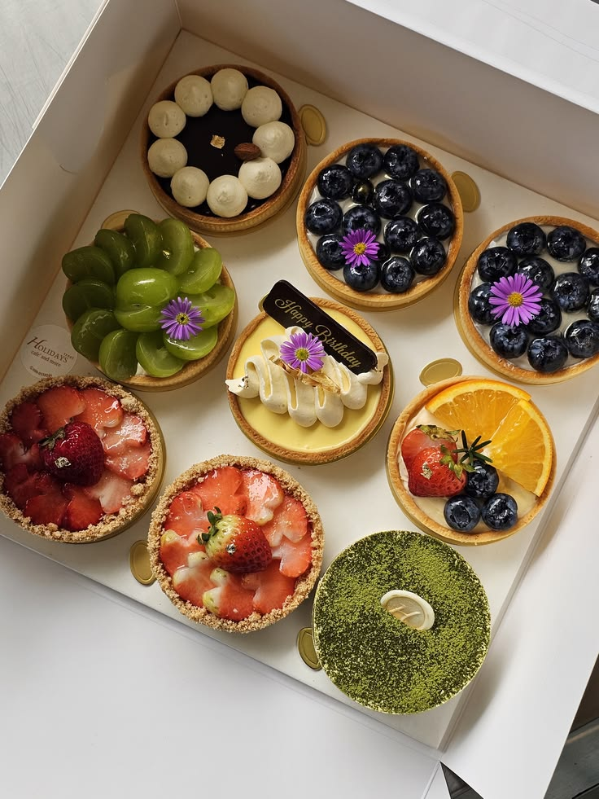
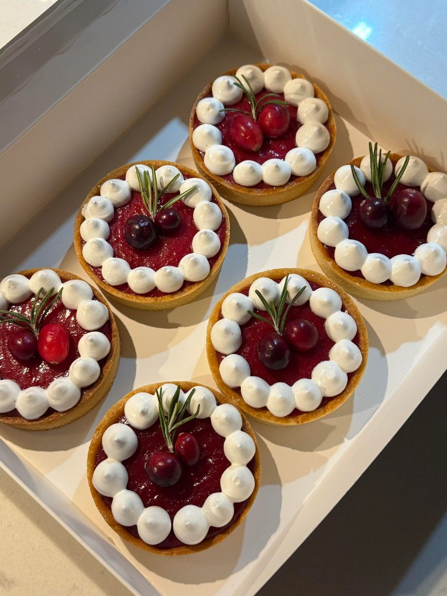

BST Mousse The Muse: Khi nghệ thuật trở thành nguồn cảm hứng cho bánh ngọt
Lấy cảm hứng từ những sắc màu, đường nét và khoảnh khắc giàu cảm xúc, The Muse giới thiệu bộ sưu tập mousse mới – nơi nghệ thuật được chuyển hóa thành những tầng hương vị tinh tế, hiện đại.
Mỗi chiếc bánh mousse tại The Muse không chỉ được tạo nên từ những nguyên liệu được lựa chọn kỹ lưỡng, mà còn bắt đầu từ một câu chuyện.
Đó có thể là cảm hứng từ một gam màu, một khoảnh khắc trong ngày hay đơn giản là cảm giác bình yên khi thưởng thức một món bánh yêu thích. Với BST mousse mới, The Muse lựa chọn nghệ thuật làm điểm khởi đầu để kể câu chuyện riêng bằng hương vị.Đó có thể là cảm hứng từ một gam màu, một khoảnh khắc trong ngày hay đơn giản là cảm giác bình yên khi thưởng thức một món bánh yêu thích. Với BST mousse mới, The Muse lựa chọn nghệ thuật làm điểm khởi đầu để kể câu chuyện riêng bằng hương vị.
Nghệ thuật: nguồn cảm hứng cho những tầng mousse
Mousse vốn được yêu thích bởi kết cấu mềm mịn, nhẹ nhàng cùng khả năng kết hợp đa dạng giữa nhiều tầng hương vị. Đây cũng chính là chất liệu để The Muse tự do khám phá và tạo nên những sản phẩm mang dấu ấn riêng.
Thay vì chỉ tập trung vào một hương vị đơn lẻ, mỗi chiếc mousse được xây dựng như một tổng thể với nhiều lớp kết hợp hài hòa: từ phần cốt bánh mềm, lớp mousse mượt mà đến nhân trái cây hoặc lớp phủ tạo điểm nhấn.
The Muse quan niệm rằng một chiếc bánh đẹp không chỉ nằm ở hình thức bên ngoài. Đằng sau mỗi đường nét, màu sắc hay lớp bánh là sự cân nhắc về hương vị, kết cấu và cảm xúc mà sản phẩm muốn mang đến cho người thưởng thức.
Bởi vậy, nghệ thuật tại The Muse không chỉ được nhìn thấy mà còn có thể cảm nhận bằng vị giác.

Những tầng hương vị được kể bằng mousse
Trong BST mới, The Muse mang đến những sự kết hợp được xây dựng dựa trên sự cân bằng giữa vị ngọt, vị béo và những điểm nhấn tươi mát từ trái cây.
Nếu chocolate mang đến chiều sâu và sự quyến rũ, trái cây lại tạo nên nét tươi sáng, thanh nhẹ. Khi kết hợp cùng lớp mousse mềm mịn, những hương vị tưởng chừng quen thuộc trở nên mới mẻ hơn qua từng tầng bánh.
Mỗi lớp mousse được chăm chút để không lấn át lớp còn lại. Cốt bánh tạo nền, mousse mang đến sự mềm mại, phần nhân tạo điểm nhấn và lớp phủ hoàn thiện trải nghiệm.
Đó cũng là cách The Muse tạo nên những chiếc bánh có nhiều tầng hương vị nhưng vẫn giữ được sự nhẹ nhàng đặc trưng của mousse.
Tỉ mỉ trong từng chi tiết
Để tạo nên một chiếc mousse hoàn chỉnh, sự chính xác là yếu tố không thể thiếu.
Từ việc cân chỉnh tỷ lệ nguyên liệu, kiểm soát kết cấu mousse đến quá trình tạo hình và hoàn thiện, mỗi công đoạn đều đòi hỏi sự cẩn thận.
The Muse lựa chọn phong cách trang trí tối giản, tập trung vào màu sắc và hình khối để làm nổi bật vẻ đẹp tự nhiên của từng chiếc bánh.
Không quá nhiều chi tiết cầu kỳ, những đường nét tinh gọn cùng bảng màu hài hòa tạo nên diện mạo hiện đại, thanh lịch – đúng với tinh thần mà The Muse theo đuổi.
Bên cạnh hình thức, chất lượng nguyên liệu cũng được đặt lên hàng đầu. Các thành phần được lựa chọn nhằm đảm bảo sự cân bằng giữa hương vị và kết cấu, để mỗi miếng bánh khi thưởng thức đều giữ được sự mềm mịn đặc trưng.
Khi một chiếc mousse trở thành món quà của cảm xúc
Một chiếc bánh không nhất thiết phải xuất hiện trong những dịp thật đặc biệt.
Đôi khi, đó là món quà dành cho một người bạn.
Là chiếc bánh nhỏ trong một buổi hẹn cuối tuần.
Là món tráng miệng cho một buổi chiều chậm rãi.
Hay đơn giản là phần thưởng dành cho chính mình sau một ngày dài.

The Muse tin rằng bánh ngọt không chỉ để thưởng thức mà còn có thể trở thành một phần của những kỷ niệm.
Bởi vậy, BST mousse mới được tạo nên với mong muốn mỗi chiếc bánh khi xuất hiện trên bàn tiệc đều có thể góp thêm một chút cảm xúc vào khoảnh khắc ấy.
The Muse – kể chuyện bằng những tầng mousse
Với BST mới, The Muse tiếp tục theo đuổi triết lý tạo nên những chiếc bánh nơi hương vị, thẩm mỹ và cảm xúc cùng tồn tại.
Không ngừng khám phá những cách kết hợp mới, The Muse mong muốn đưa mousse trở thành nhiều hơn một món tráng miệng – đó là một trải nghiệm nhỏ để người thưởng thức có thể chậm lại, cảm nhận và tận hưởng.
Từ cảm hứng nghệ thuật đến những tầng mousse mềm mịn, mỗi chiếc bánh là một câu chuyện được kể theo cách rất riêng.
The Muse – nơi nghệ thuật được nếm bằng vị giác.
BST Trung thu The Muse: Gói trọn vị trăng trong những tầng mousse
Lấy cảm hứng từ những đêm trăng đoàn viên, The Muse giới thiệu BST Trung thu với sự kết hợp giữa hương vị truyền thống và phong cách bánh mousse hiện đại, mang đến một trải nghiệm Trung thu mới mẻ nhưng vẫn trọn vẹn cảm xúc.
Trung thu từ lâu đã trở thành một trong những dịp lễ gắn liền với ký ức sum vầy của người Việt. Đó là ánh trăng sáng, những câu chuyện bên mâm trà và khoảnh khắc mọi người cùng trao nhau những món quà mang theo lời chúc bình an.
Với mong muốn kể lại câu chuyện Trung thu bằng một ngôn ngữ mới, The Muse mang đến BST bánh Trung thu được lấy cảm hứng từ vẻ đẹp của mùa trăng, kết hợp tinh thần truyền thống với dấu ấn hiện đại đặc trưng của thương hiệu.
Mùa trăng – nguồn cảm hứng cho BST Trung thu The Muse
Nếu những chiếc bánh Trung thu truyền thống gợi nhắc về ký ức tuổi thơ, thì The Muse lựa chọn một cách tiếp cận mới: giữ lại những giá trị quen thuộc nhưng thể hiện chúng qua góc nhìn trẻ trung và tinh tế hơn.
BST Trung thu lần này được xây dựng xoay quanh hình ảnh mặt trăng, ánh sáng và sự đoàn viên. Từ tên gọi, màu sắc đến thiết kế hộp bánh đều được thống nhất trong một câu chuyện về mùa trăng.
Những gam màu nhẹ nhàng kết hợp cùng các chi tiết lấy cảm hứng từ ánh trăng tạo nên diện mạo thanh lịch, hiện đại. Hộp bánh không chỉ đóng vai trò bảo quản sản phẩm mà còn được thiết kế như một món quà có thể trao gửi trong những dịp đặc biệt.
Bởi với The Muse, một món quà Trung thu không chỉ cần ngon mà còn cần truyền tải được tấm lòng của người trao và cảm xúc của người nhận.
Những chiếc bánh được chăm chút từ hương vị đến diện mạo
Đằng sau mỗi chiếc bánh là sự tỉ mỉ trong từng công đoạn.

Từ việc lựa chọn nguyên liệu, cân chỉnh công thức đến tạo hình và hoàn thiện, mỗi sản phẩm đều được chăm chút để đảm bảo sự đồng nhất về chất lượng.
Phần vỏ bánh được hoàn thiện với độ mềm vừa phải, bao bọc phần nhân đậm đà bên trong. Các loại nhân được cân bằng về độ ngọt để khi kết hợp cùng trà hoặc cà phê vẫn giữ được sự hài hòa.
Bên cạnh hương vị, thiết kế cũng là một phần quan trọng trong trải nghiệm Trung thu.
Hộp bánh The Muse được xây dựng theo phong cách tối giản nhưng tinh tế, sử dụng hình ảnh ánh trăng làm điểm nhấn. Những chi tiết trang trí được tiết chế để tạo cảm giác hiện đại, phù hợp với cả những buổi đoàn viên gia đình và những món quà dành tặng đối tác, bạn bè.
Một hộp bánh – nhiều câu chuyện được trao gửi
Trung thu không chỉ là dịp để thưởng thức bánh.
Đó còn là lúc người ta nhớ đến gia đình, những người thân yêu và những mối quan hệ đáng trân trọng.
Một hộp bánh được gửi đi có thể là lời hỏi thăm dành cho cha mẹ, lời cảm ơn dành cho người đồng hành hay lời chúc bình an gửi đến một người bạn.
The Muse mong muốn mỗi hộp bánh Trung thu khi được trao đi sẽ mang theo một câu chuyện riêng.
The Muse – viết tiếp câu chuyện mùa trăng bằng một ngôn ngữ mới
Không cố gắng thay thế những giá trị truyền thống, The Muse lựa chọn cách tiếp nối chúng bằng một diện mạo mới.
BST Trung thu là sự kết hợp giữa những hương vị thân thuộc của mùa trăng và tinh thần hiện đại mà The Muse theo đuổi – nơi mỗi chiếc bánh được tạo nên từ sự chỉn chu, sáng tạo và cảm xúc.
Bởi sau tất cả, Trung thu vẫn là câu chuyện về đoàn viên.
Và đôi khi, chỉ cần một hộp bánh nhỏ, một ấm trà và những người mình yêu thương bên cạnh, mùa trăng đã trở nên trọn vẹn.
CROISSANT – MỘT CHÚT NƯỚC PHÁP CHO NGÀY MỚI
Có những buổi sáng không cần quá vội.
Có những buổi sáng không cần quá vội.
Chỉ cần một tách cà phê nóng, một chiếc croissant vàng ươm và vài phút thật chậm để tận hưởng ngày mới.
Croissant chinh phục người yêu bánh bởi những lớp bột mỏng xếp chồng, phần vỏ ngoài vàng giòn và bên trong mềm xốp, thơm mùi bơ.
Mỗi lần cắn xuống là một chút giòn tan.
Mỗi lớp bánh lại mở ra một chút béo thơm.
Và rồi chỉ cần thêm một ngụm cà phê…
Một buổi sáng bình thường cũng trở nên thật “chill”.
Tại The Muse, croissant được chăm chút để giữ trọn nét quyến rũ vốn có của dòng bánh này – từ những lớp bánh vàng óng đến kết cấu nhẹ, xốp và thơm bơ.
Ăn sáng thật ngon.
Uống cà phê thật chậm.
Và bắt đầu ngày mới theo cách của riêng bạn.
Ghé The Muse để thưởng thức một chiếc croissant vừa ra lò và tìm cho mình một góc nhỏ thật bình yên.
Nếu được chọn, bạn sẽ ăn croissant cùng Cà phê hay Trà ?
MỘT CHIẾC MOUSSE CÓ GÌ MÀ KHIẾN NGƯỜI TA “MÊ” ĐẾN VẬY?
Nhìn bên ngoài, mousse có thể trông khá đơn giản. Nhưng ẩn bên trong một chiếc bánh nhỏ lại là cả một thế giới của nhiều tầng hương vị và kết cấu.
Nhìn bên ngoài, mousse có thể trông khá đơn giản. Nhưng ẩn bên trong một chiếc bánh nhỏ lại là cả một thế giới của nhiều tầng hương vị và kết cấu.
Nội dung chi tiết của bài viết đang được cập nhật.
Một lớp cốt bánh mềm làm nền.
Một lớp mousse mịn, nhẹ và tan dần trong miệng.
Một chút trái cây tạo vị tươi mới.
Và đôi khi là một lớp nhân bất ngờ ở chính giữa.
Điều thú vị của mousse nằm ở sự cân bằng.
Không quá ngọt.
Không quá béo.
Không quá nặng vị.
Mỗi lớp được tạo ra để bổ trợ cho lớp còn lại, để khi thưởng thức, bạn không chỉ cảm nhận một hương vị mà là cả một hành trình nhỏ qua từng tầng bánh.
Đó cũng là điều The Muse luôn theo đuổi: tạo nên những chiếc mousse có diện mạo tinh tế, hương vị hài hòa và đủ đặc biệt để khiến bạn muốn thưởng thức thêm một miếng nữa.
Vậy nếu hôm nay được chọn MỘT vị mousse cho mình…
Bạn sẽ chọn Chocolate, Dâu hay Matcha ?
NGƯỜI YÊU CÓ THỂ KHÔNG CÓ… NHƯNG BÁNH THÌ NHẤT ĐỊNH PHẢI CÓ
Valentine? Không người yêu.
Cuối tuần? Không có kèo.
Tối nay? Chẳng biết làm gì.
THÌ ĂN BÁNH.

< /div>Dâu cho những tâm hồn thích sự ngọt ngào.
Chocolate cho team “đắng một chút mới cuốn”.
Cheese cho hội mê béo ngậy.

Và tất nhiên… một chiếc bánh + một ly cà phê = combo chân ái.
Đừng chờ ai đó mua bánh cho mình.
Tự mua cũng được.
Tự ăn cũng được.
Tự vui càng được.
Ghé The Muse và chọn chiếc bánh dành riêng cho mood hôm nay!
HÔM NAY BẠN ĐÃ TỰ THƯỞNG CHO MÌNH CHƯA?
Có những ngày chẳng cần một lý do đặc biệt để ăn bánh.
Có những ngày chẳng cần một lý do đặc biệt để ăn bánh.
Không sinh nhật, không kỷ niệm, cũng chẳng cần chờ đến cuối tuần.
Chỉ đơn giản là hôm nay bạn đã đủ bận rộn rồi — vậy nên hãy cho mình một chút ngọt ngào.
Một miếng bánh mềm xốp, lớp kem vừa đủ béo, chút hương thơm nhẹ nhàng…
Đôi khi, một món bánh nhỏ cũng đủ khiến một ngày bình thường trở nên dễ chịu hơn.

Bánh dành cho những buổi chiều cần được chữa lành.
Bánh cho những cuộc gặp gỡ lâu ngày mới có.
Bánh cho những cột mốc đáng nhớ.
Và cũng là bánh cho chính bạn — vì bạn xứng đáng.

Nếu hôm nay chưa biết chọn vị gì, cứ để The Muse lo nhé!
Ghé tiệm, chọn một chiếc bánh bạn thích và mang về một chút niềm vui.
Ghé The Muse để thưởng thức những chiếc bánh được làm bằng thật nhiều sự chăm chút.